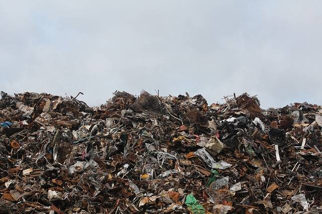

Porque devemos ciciclar?
Os brasileiros jogam fora 76 milhões de toneladas de lixo – 30% poderiam ser reaproveitados, mas só 3% vão para a reciclagem. Este número é bastante baixo em comparação com países da Europa, alguns reciclam mais de 50% dos seus resíduos. Existe ainda uma grande quantidade de resíduos que podem ser reciclados que acaba em aterros que é prejudicial para o meio ambiente.

A reciclagem é uma excelente maneira de economizar energia e preservar o meio ambiente. Você sabia disso:
- 1 lata reciclada pode poupar energia suficiente para abastecer uma televisão por 3 horas.
- 1 garrafa de vidro reciclado pode poupar energia suficiente para alimentar um computador por 25 minutos.
- 1 garrafa de plástico reciclado pode poupar energia suficiente para alimentar uma lâmpada de 60 watts durante 3 horas.
- 70% menos energia é necessária para reciclar papel em comparação com tornando-se a partir de matérias-primas.
Em dez anos, o número de municípios que implantaram programas de reciclagem aumentou de 81 para mais de 900. Mas isso não representa nem 20% das cidades.
Curitiba é a capital com melhor programa de reciclagem. Das mais de 1,5 mil toneladas diárias, cento e dez têm potencial pra reciclagem e quase 70% são reaproveitadas,mas a reciclagem no Brasil ainda está engatinhando.
Veja a situação nas maiores capitais:
- Em São Paulo, 12,5 mil toneladas de lixo domiciliar são recolhidas todos os dias - 35% são materiais que poderiam ser reciclados, mas só 3% são reaproveitados.
- A prefeitura do Rio de Janeiro informou que recolhe cerca de dez mil toneladas de lixo por dia, mas não informou quanto é reciclado. A capital mineira, Belo Horizonte, recolhe 1,8 mil toneladas. Podia reciclar o dobro do que reaproveita.
- Quem trabalha em programas de reciclagem diz que falta uma integração maior entre o cidadão, as empresas e o poder público, e um programa que atenda a todos os tipos de lixo.